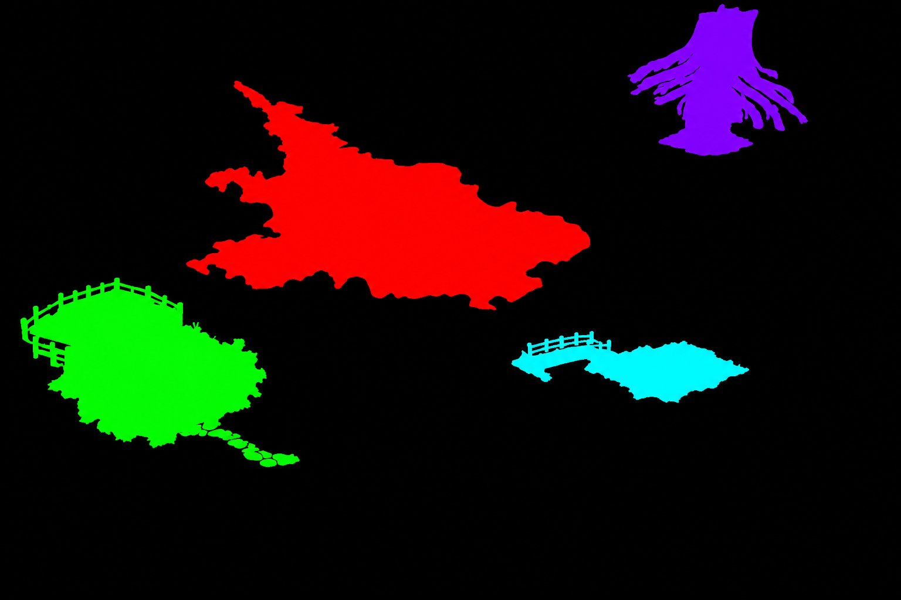
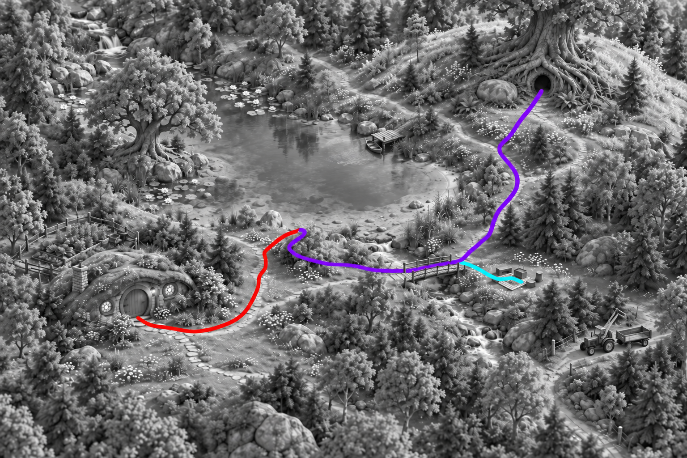
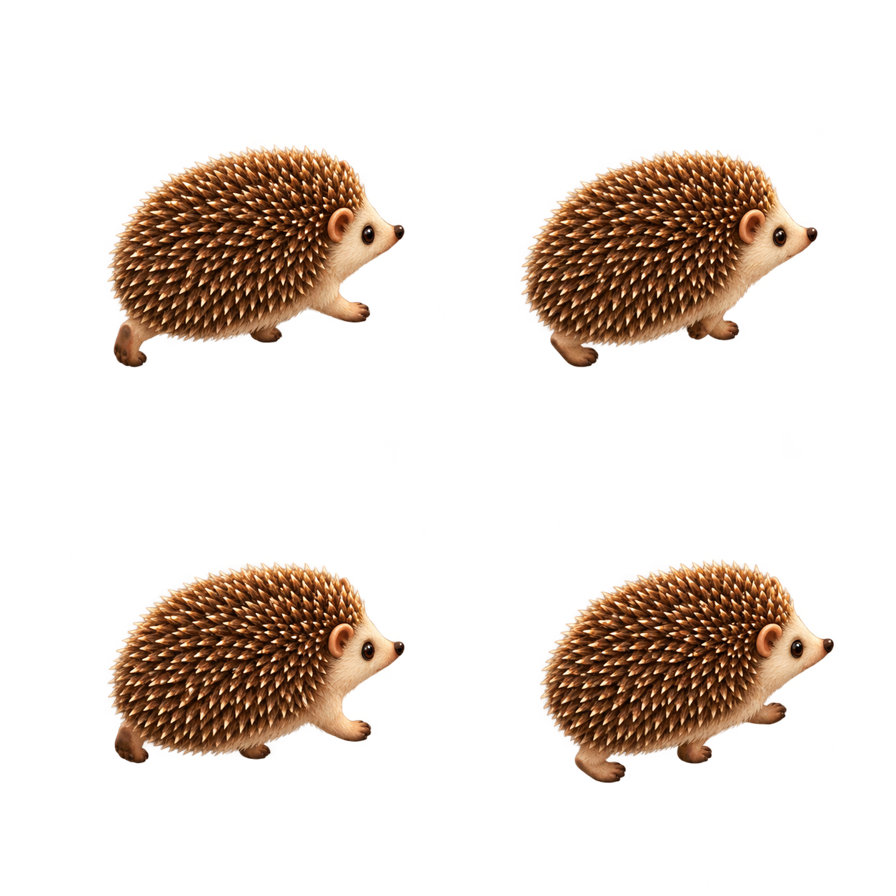

Mr. PinPin / Atlas interaction study
The Shire: touch regions, routes and a walking sprite
Three generated assets separate where a finger can tap, where a character can walk, and how that character moves.
5 of 5 images generated. Interaction prototype for review.
Generation 1 / Reading position 1
Destination segmentation
Natural silhouettes become touch targets instead of badges.
Camera. Preserve the source atlas exactly,1536x1024.

What I See
Good approximate alignment of all four landmark silhouettes. Color areas include tiny antialiased variations requiring tolerant classification. Unwanted black holes remain at the Elder doorway, cottage windows and picnic furniture, and red includes disconnected upstream water. Superseded for interaction by a targeted hole-filling edit; preserve this attempt as evidence.
Markdown record · Full-resolution image
Exact Prompt
Use case: precise-object-edit. Edit the supplied 1536x1024 atlas into an EXACTLY REGISTERED FLAT COLOR SEMANTIC SEGMENTATION MASK, not a new landscape. Preserve the image framing, scale and the boundaries/locations of the existing features. Output 1536x1024. Paint every nonselected pixel pure solid BLACK #000000. Use only FOUR solid flat colors for FOUR disjoint organically shaped regions following the depicted objects, with NO texture, shading, gradients, outlines or text. Region1: pure RED #ff0000 fills the full Crystal Lake water silhouette in the central upper-left, following its actual irregular shores, excluding the large tree and the land inside the lake. Region2: pure PURPLE #8000ff fills the Elder's massive oak trunk/root mass, burrow entrance and immediate front doorstep in the TOP RIGHT, a natural silhouette at that exact location. Region3: pure GREEN #00ff00 fills the family cottage moss roof, facade, chimney, garden and immediate stepping-stone doorstep in the LOWER LEFT; follow the cottage/garden silhouette rather than a rectangle. Region4: pure CYAN #00ffff fills the wooden footbridge and its immediately adjacent picnic clearing on the right bank, around center-right, one contiguous natural target area reaching the checked picnic cloth but NOT reaching the tractor further down. All areas should be broad readable touch regions. Keep these four regions separated by black ground. The output is a machine-readable flat-color label image: black background plus solid red, purple, green, cyan shapes exactly placed over their source features. No pins, no circles, no lettering, no characters. Do not move, resize, rearrange or redraw the scene geometry.
References
- shire-v1.png: Exact edit target, same terrain coordinates and frame.
{kind=link}
Generation 2 / Reading position 2
Filled destination touch regions
Fill holes so doorways and picnic props are included in touch regions.
Camera. Exactly preserve segmentation mask coordinates and dimensions.

What I See
The Elder doorway, cottage windows and picnic furniture are now included in their regions. Detached upstream lake patches are removed. Four main destination silhouettes remain approximately registered to source artwork, with minor boundary approximation. Use tolerant palette classification rather than strict exact RGB equality. Suitable first interaction mask pending pixel tests.
Markdown record · Full-resolution image
{kind=link}
Exact Prompt
Use case: precise-object-edit. Edit ONLY this segmentation mask, same 1536x1024 frame. Keep existing external boundaries and locations of the four large colored shapes. Make each main region solid and internally filled: fill the black oval doorway hole inside the PURPLE oak roots with exactly the surrounding PURPLE #8000ff; fill the black gaps within the root/home mass as a broad contiguous tap target. Fill the black circular windows and black outlined doorway/stone outlines INSIDE the GREEN cottage with GREEN #00ff00. Fill the black picnic furniture, cloth hole and internal bridge holes INSIDE the CYAN bridge/picnic region with CYAN #00ffff. Keep black background outside the external silhouettes. Keep the big central RED lake #ff0000. Remove ONLY the detached small red patches in the upper-left near the top edge and far left above the big lake, making those disconnected patches BLACK. Pure flat solid colors, black background, absolutely no lettering, no texture, no shading, no gradients. Do not move or rescale any of the four main regions. This is a pixel-aligned click-mask, so a dark doorway must be INCLUDED in its region, not cut out.
References
- shire-regions-v1.png: Edit target. Keep outlines, size and position unchanged except remove the disconnected red upper-left water patches.
Generation 3 / Reading position 3
Grayscale route segmentation
Separate flat-color paths encode story sequence while following the terrain.
Camera. Exactly preserve the original atlas frame, converted to neutral grayscale.

What I See
Red follows the cottage stepping stones and lake approach well. Purple remains recognizable but shortcuts across the lake outlet; cyan also cuts across the stream before reaching the bridge. These are not acceptable walking trajectories. Preserve as first route-direction attempt; reroute through the actual wooden bridge before runtime use.
Markdown record · Full-resolution image
Exact Prompt
Use case: precise-object-edit. Edit THIS ORIGINAL ATLAS into a route-segmentation diagram. Keep the exact 1536x1024 image framing and ALL scenery geometry, convert the entire underlying landscape to neutral GRAYSCALE. Draw ONLY THREE brightly colored solid continuous walking-route lines on top, like an OpenStreetMap route layer. No other colored pixels. Lines are flat saturated color, around10pixels thick, smooth centerlines following the existing footpaths. No dash gaps, arrowheads, dots, endpoint circles, markers, labels or writing. RED #ff0000 route starts on the doorstep of the lower-left family cottage (x20%,y70%), follows the existing stepping stones right and northeast through the clearing (x29%,y73%, then x35%,y64%, then x37%,y56%), ending ON THE LAND at the southern lake shore (x44%,y52%). PURPLE #8000ff route starts at that same lakeshore point x44%,y52%, follows the existing dry shore path east around the OUTSIDE RIGHT bank of the lake (x53%,y52%, then x63%,y47%, then x70%,y38%, then x73%,y29%), ending at the oak-root burrow doorway x79%,y20% in the upper-right. This route never crosses lake water. CYAN #00ffff branch starts on that shore path near x56%,y52%, follows the dry land south-east to the wooden footbridge at x62%,y59%, then crosses the bridge deck and ends in the picnic clearing x75%,y61%. Place each line ON walking surfaces, never across trees, rooftops, open water or rocks. These percentages orient you; actual source footpaths take priority so route bends can follow visible ground. Preserve the full exact original map with no rearrangement, all features clearly recognizable in grayscale. Only the three routes have color. Flat continuous isolated route strokes, no glow, no color gradients.
References
- shire-v1.png: Exact original atlas geometry, not the segmentation mask.
Generation 4 / Reading position 4
Walking routes through the bridge
Correct water-crossing shortcuts so the route traverses the footbridge.
Camera. Same original atlas coordinates and grayscale scenery.

What I See
The route now uses the wooden bridge as the stream crossing. Red preserves the cottage approach; purple backtracks beside the lake, crosses the bridge deck and goes up the east bank; cyan branches on the east bank into the picnic clearing. Some line placement approximates foliage-covered ground, so runtime trace should be checked against the actual terrain. Suitable route source for this prototype, not an exact navigation survey.
Markdown record · Full-resolution image
{kind=link}
Exact Prompt
Use case: precise-object-edit. Correct ONLY the walking-route lines in reference1. Keep its grayscale landscape exactly registered at1536x1024; reference2 shows originalterrain. Keep the RED cottage-to-lake path unchanged. Remove the existing PURPLE shortcut across the lake outlet, remove the existing CYAN diagonal crossing of the stream. There is only ONE safe crossing of the stream: the wooden bridge. Draw the PURPLE route as follows, on dry ground: start at the red route's lakeshore endpoint around (670,514), backtrack slightly southwest beside the upper red path to around (600,565), then turn east-southeast across the dry clearing on the WEST/LEFT side of the stream, toward (700,598), (800,623), (875,622). Enter the WEST end of the wooden bridge at (900,620), cross ON THE WOODEN BRIDGE DECK to the EAST end around (1010,594). Then follow the dry east-bank walking path north/up around (1050,545), (1100,480), (1145,410), (1115,340), (1160,280), ending at the Elder burrow doorway (1210,207). Follow the actual visible walking surfaces when adjusting these guidepoints. Water and rocks on the stream itself are not walkable; the route crosses water ONLY on the existing bridge. PURPLE #8000ff flat smooth10pixelstroke. Now a short CYAN #00ffff side path branches from the EAST end of the bridge (1010,594) and follows the dry picnic clearing to (1140,618). Cyan never crosses the stream separately. No colored line along the southern lake outlet water. No labels, markers, circles or arrows. All scenery grayscale, only RED/PURPLE/CYAN route strokes have color. Preserve terrain, framing and all landmarks.
References
- shire-routes-v1.png: Edit target, preserve grayscale map registration and red cottage route.
- shire-v1.png: Original terrain, bridge and dry paths for navigation accuracy.
Generation 5 / Reading position 5
PinPin first walking sprite
A four-frame quadruped walk cycle for a small traveler on the atlas.
Camera. Fixed high three-quarter camera looking down at one small hedgehog facing right; all frames same direction.

What I See
Four distinct right-facing high three-quarter gait poses. Actual PNG1254x1254 with genuine alpha: each627x627 cell is76-77% fully transparent. Measured body crops and foot anchors in atlas-geometry.js align playback without modifying the PNG. Saturated red/yellow fringe is confined to alpha1-2/255 (below0.8% opacity), with none above alpha2; inspect final size rather than assuming enlarged preview artifacts are opaque. Single camera-angle prototype: horizontal mirroring is not a new view. Anatomy and body shape vary slightly by gait frame; awaiting user review of the animated result.
Markdown record · Full-resolution image
{kind=link}
Exact Prompt
Use case: illustration-story. Asset type: game animation sprite sheet on GENUINELY TRANSPARENT background. Create a1024x1024 PNG with alpha transparency, EXACTLY TWO COLUMNS and TWO ROWS of equal512x512 cells. Four frames total read top-left, top-right, bottom-left, bottom-right. Each cell contains ONE Mr.PinPin, the little natural hedgehog fromreference1, rendered for the bird-eye woodland atlas inreference2. Camera is a fixed high three-quarter view looking down about55degrees, seeing his brown rounded quill-covered back and cream pointed face. In ALL FOUR frames he faces and walks to the RIGHT, slightly toward the upper-right, body low and horizontal, normal compact four-legged hedgehog gait. Four short paws attached to the appropriate front and hind corners; only anatomically visible paws need show. Same appealing bright eye, tiny dark nose, small rounded ears, finely detailed brown quills and soft cream muzzle in allframes. No clothes, no boots, no head ornament. Preserve same size, location within everycell, camera, bodyshape, face and lighting; each hedgehogfitsinside300x300pixels centered inits512x512cell, leaving100pixels of clear transparent padding around. Feet land on the same baseline in eachcell. Frame1:nearfrontpawforward/nearhindpawback;Frame2:paws passing beneath the body;Frame3:nearfrontpawback/nearhindpawforward;Frame4:opposite passing phase. Gentle natural four-beatwalk, minimal body bob, no human arm gestures. Four distinct successive gaitposes, not differentcharacters or viewpoints. Soft neutral daylight consistent withmap. GENUINE ALPHA TRANSPARENCY everywhere exceptthecharacter, no white or colored backdrop, no drawn checkerboard, no groundplane, no separate castshadow, no borders, no cell lines, no labels, no lettering. This will be sliced into four animation frames and played small on the map.
References
- 01a.png: PinPin's quills, cream face and compact body identity only; remove all scenery.
- shire-v1.png: Map camera and miniature rendering style only, not background.
{kind=link}
Source and Process
Replace the first atlas's visible labels and circular markers without changing the story files or the original map artwork.
Source Artwork
The approved first atlas supplies the common camera, landscape and pixel frame for both segmentation and route diagrams.
PinPin's existing story illustration supplies character identity. A first four-frame side/rear walk cycle tests the idea before creating more viewing angles.
The Method, in Order
- Generate a flat-color destination segmentation edit from the original map.
- Generate a grayscale version with distinct flat-color paths on the existing land routes.
- Generate a first four-frame walking sprite from the existing character reference.
- Inspect alignment and frame quality, derive runtime route geometry from the colored route image, and use segmentation pixels for hit testing.
- Test touch taps, drag and pinch suppression, motion, reduced-motion preference, keyboard navigation, languages and story unlocking.
Three Assets
- Destination segmentation Preserve the source atlas exactly,1536x1024.
- Filled destination touch regions Exactly preserve segmentation mask coordinates and dimensions.
- Grayscale route segmentation Exactly preserve the original atlas frame, converted to neutral grayscale.
- Walking routes through the bridge Same original atlas coordinates and grayscale scenery.
- PinPin first walking sprite Fixed high three-quarter camera looking down at one small hedgehog facing right; all frames same direction.
Measured, Not Estimated
296.6 seconds summed image-call wall time across 5 registered calls. This includes tool waiting, not just model computation. It excludes preparation, review, publishing and any undocumented earlier work. No monetary cost is exposed by these calls.
Records above follow actual generation time. Reading positions are recorded separately. Every attempt has its own filename and record; a retry is not counted as a successful one-shot.
Interaction Principles
No map circles or always-visible labels. Natural destination silhouettes are the touch regions.
A tap opens a story. A drag pans. A pinch zooms. No hover is required.
Progress records stories opened, not proof that they have been read. The unpublished home chapter remains unavailable.
The first sprite angle is a prototype; mirroring it is not a new camera view.